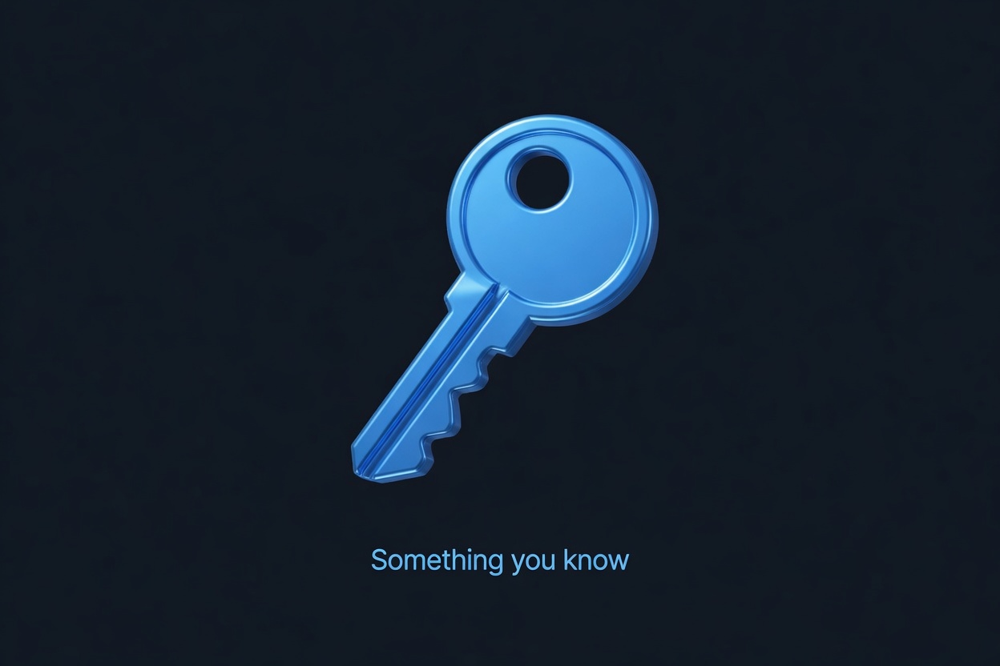

Practice only.
Prefer an air-gapped machine. Do not fund words or addresses from this tab.
0 of 3 in Start here
0 / 31 all paths
- 1
- 2
- 3
Next · Keys and backup
Track gate
BIP-39 backup sheet (offline practice)
Write words by hand if this is for real funds. Never photograph a funded sheet on a networked phone.

Passphrase? ☐ no ☐ yes (stored separately, never with this sheet)
Created with the bip39.catalyxt.xyz lab. Practice only. Verify the checksum by re-entering the words offline. Do not fund this sheet.